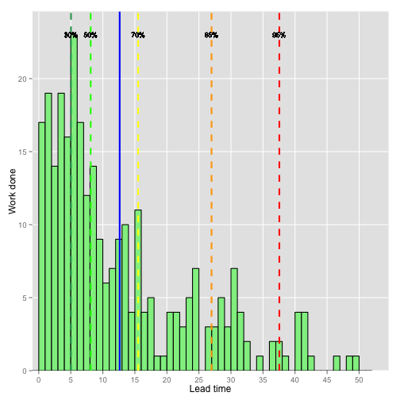

- Agile Metrics
- Lead Time Histogram App
- App Histogram Example
Lúcia Teresa Schalcher da Fonseca
System Analyst
Apart from using tradicional agile metrics, we can manage an agile project flow with metrics like Work In Progress, Lead Time and Troughput.
Tracking these metrics and visualizing them in analytic charts can bring visibility to problems in the process flow and make the process more predictable.
A Lead Time Histogram gives an overall idea of the shape of the project lead time distribution. This shape can give an insigth to problems that can be ocurring in the project process.
The Lead Time Histogram App plots an histogram that shows frequency on the Y axis and lead time on the X axis. The percentile lines represents the percentage of the work items that took n days or less to complete, where n is the corresponding lead time value on X axis.
Currently the App is a demo that uses data of a project with two type of work items. It plots the Lead Time Histogram with the percentile lines and shows a table with the average, median and the 30%, 50%, 70%, 85% and 95% lead times below the histogram. The type of work item to show can be selected.
The idea is to improve the App with new features like:
library(shiny)
library(ggplot2)
library(graphics)
library(MASS)
library(car)
LT <- read.csv("./LeadTime.csv", sep=",")
vLT <- c(0, 5, 10, 15, 20, 25, 30, 35, 40, 45, 50)
qLTNames <- c("30%", "50%", "70%", "85%", "95%")
qLT <- quantile(LT$LeadTime, probs=c(0.3, 0.5, 0.7, 0.85, 0.95))
avg <- mean(LT$LeadTime)
md <- median(LT$LeadTime)
vQ <- as.vector(qLT)
freqLT <- c(0, 5, 10, 15, 20, 25, 30)
qTextPos <- 23
g <- ggplot(LT) + labs(x="Lead time", y="Work done") +
geom_histogram(aes(x=LeadTime), color="black", fill="lightgreen", binwidth=1) +
scale_x_discrete(breaks=vLT, labels=waiver()) +
scale_y_discrete(breaks=freqLT, labels=waiver()) +
geom_vline(xintercept=vQ[1], color="#2ca25f", size=1, linetype=2) +
geom_vline(xintercept=vQ[2], color="green", size=1, linetype=2) +
geom_vline(xintercept=vQ[3], color="yellow", size=1, linetype=2) +
geom_vline(xintercept=vQ[4], color="orange", size=1, linetype=2) +
geom_vline(xintercept=vQ[5], color="red", size=1, linetype=2) +
geom_vline(xintercept=avg, color="blue", size=1, linetype=1) +
geom_text(label=qLTNames[1], x=vQ[1], y=qTextPos, size=3) +
geom_text(label=qLTNames[2], x=vQ[2], y=qTextPos, size=3) +
geom_text(label=qLTNames[3], x=vQ[3], y=qTextPos, size=3) +
geom_text(label=qLTNames[4], x=vQ[4], y=qTextPos, size=3) +
geom_text(label=qLTNames[5], x=vQ[5], y=qTextPos, size=3)
